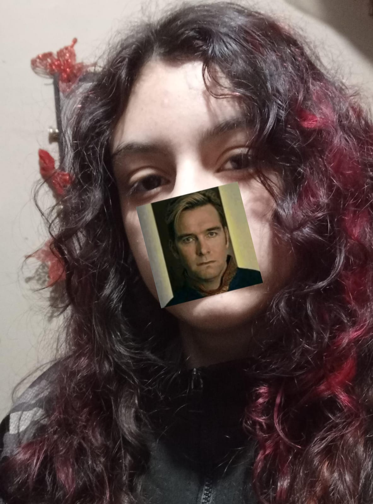

ALUNOS

Matheus H. P. Carnovale
Bio
Meu nome é Matheus, tenho 17 anos e atualmente estou cursando o 2º ano do ensino médio técnico em desenvolvimento de sistemas no Colégio Alberto de Carvalho, e também sou estagiário pela Prefeitura Municipal de Prudentópolis na área de turismo. Nas horas vagas, gosto muito de desenhar, fazer artesanatos, ouvir música e passar tempo com meus amigos. Futuramente pretendo seguir na área de desenvolvimento de sistemas ou cursar arquitetura e me mudar para uma cidade maior.